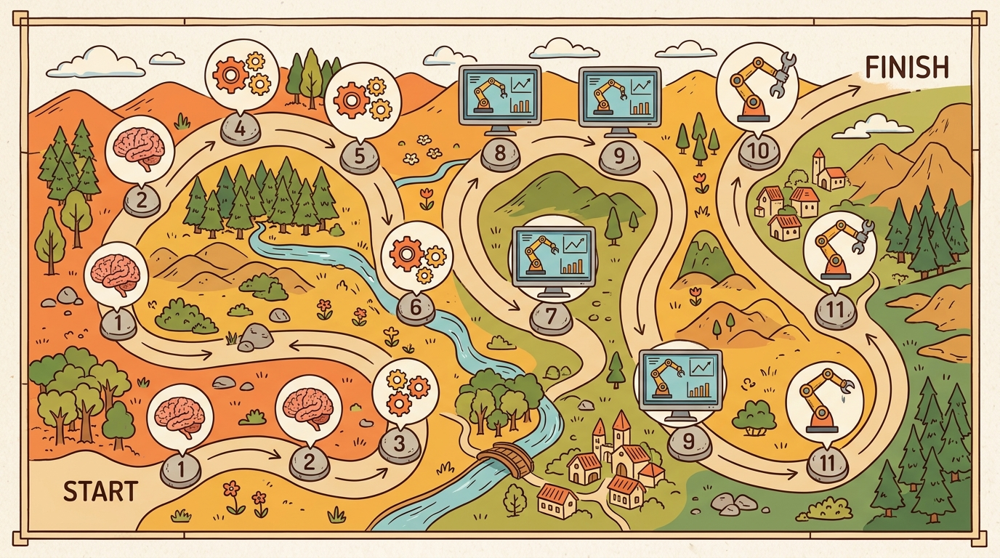

"A good map does not tell you everything. It tells you where the next failure belongs."
A Careful Control Loop

A robot arm fails to pick up a cup. Is the fault in its sensor pipeline, its learned policy, its physics model, or its safety layer? Without a clear map, a practitioner chases the wrong module for hours. That diagnostic clarity is what makes architecture literacy urgent right now: embodied AI systems have grown complex enough that no one layer explains failure or success. This section hands you that map, previewed in Figure 1.8A. Twelve parts trace the closed sense-decide-act loop from its mathematical substrate through two learning routes, three scaling contracts, physical skill assembly, human-robot teaming, and deployment. By the end, you will know exactly which chapter to open when the next failure arrives. The loop-ownership heuristic below routes a failure to a part first; once you are in that part, the chapter list beside its name (for example, "Part VI, Chapters 27-30") narrows the search to a handful of chapters, and the chapter's own title tells you whether it covers the specific sub-system at fault.
Figure 1.8 sketches the three loop edges this map is organized around: Evidence (what the agent receives), Decision (what the system changes), and Consequence (what the next step inherits). The dashed arrow marks the feedback that makes each new input depend on the last action. Closed-loop feedback matters in embodied AI because physics cannot be paused or undone. A static classifier can ignore its prior outputs. A robot arm whose gripper slipped must account for that slip in every subsequent command; otherwise accumulated positional error causes the next grasp to miss entirely. Real actuators saturate, joints carry inertia, and contact forces propagate through the structure. Any plan that ignores the current measured state degrades rapidly into an open-loop guess that the world has already invalidated.
The mechanism is a sampled-data cycle (sensing, deciding, and acting happen at discrete, fixed-length time steps rather than continuously). At each timestep, the sensor pipeline converts raw measurements into a state estimate. The policy maps that estimate to a motor command, the actuator applies the command, and the resulting physical change becomes the next sensor reading. Each iteration takes a fixed real-world duration, typically one to ten milliseconds for joint control. The next observation depends causally on the last action, so uncorrected errors typically compound across the horizon rather than staying fixed: for a serial-chain manipulator, a 0.5-degree joint-angle error that seems trivial at step one can grow, depending on link lengths and which joint is affected, to a multi-degree end-effector deviation after several dozen steps, easily enough to turn a successful grasp into a miss of several centimeters. This is why the loop-ownership heuristic routes perception faults to Part VI rather than to the policy: corrupted Evidence poisons every subsequent Decision before learning can compensate.
Think of compounding loop error like navigating a city by dead reckoning: if you misread your starting street by one block and then take every subsequent turn relative to that wrong position, your final location drifts further from your target with each corner you turn. Correcting at turn three undoes only that step's drift; the error from turns one and two is already baked into your path. A closed-loop controller that ignores a small position slip faces the same accumulation: each new command is aimed at a state the world has already left, so the gap between intended and actual trajectory widens every cycle.
The twelve parts and how they depend on each other
Part I, Foundations of Embodied AI (Chapters 1-3) is the part you are reading. It fixes the vocabulary: the static-versus-embodied distinction, the agent-environment interface as a controlled Markov process (a state that evolves step by step, where the agent's action partly determines the next state, as opposed to a state that changes on its own), and the space of system architectures from monolithic policies to modular perception-planning-control stacks. Everything later assumes this framing.
Part II, Mathematical, Robotics, and Control Foundations (Chapters 4-8) supplies the mathematics of a body that moves: coordinate frames and rigid transforms, forward and inverse kinematics, rigid-body dynamics, control for practitioners, and the sensor and state-estimation chain that turns raw measurements into usable state. This part is the prerequisite for any chapter where a real or simulated body executes a command.
Part III, Simulation, Tooling, and the Modern Stack (Chapters 9-13) is where measurement becomes repeatable: why simulation is central, the Gymnasium and PettingZoo environment contracts, the physics simulators (MuJoCo, MJX, Isaac Lab, Genesis), benchmark and task suites, and domain randomization (deliberately varying simulator parameters such as lighting, textures, and physics constants so a policy trained in simulation stays robust when transferred to hardware) for synthetic data. It is depended on by almost every later part, because reinforcement learning, manipulation, locomotion, driving, and safety all run their experiments here first.
Part IV, Reinforcement Learning for Embodied Agents (Chapters 14-20) develops the reward-driven route to a policy: the RL refresher, policy-gradient methods and Proximal Policy Optimization (PPO), value-based and off-policy methods, massively parallel GPU RL, reward and goal design, exploration in embodied worlds, and sim-to-real transfer. The difference reward shaping makes is not marginal: a sparse-reward locomotion task that requires 10,000 episodes to converge without shaping typically converges in under 200 with a well-designed dense signal, a 50x reduction that fits inside a single GPU-hour rather than a multi-day cluster run (figures representative of MuJoCo locomotion benchmarks as of 2024; exact ratios vary by task and shaping scheme). It assumes Parts II and III.
Part V, Imitation Learning, Demonstrations, and Robot Data (Chapters 21-26) develops the demonstration-driven route: imitation foundations and the compounding-error problem from Section 1.1, action chunking with diffusion policies (ACT, Diffusion Policy) and flow-matching policies (pi0), teleoperation and data collection rigs, and the data-scaling laws visible in cross-embodiment datasets. The benchmark datasets here are concrete: Open X-Embodiment aggregates over 1 million trajectories across 22 robot embodiments (at the time of the 2023 release; the corpus has grown since); DROID provides 76,000 real-world Franka Panda episodes collected across 86 environments; BridgeData V2 contributes 60,096 teleoperated tabletop manipulation sequences; and the LeRobot dataset collection (released 2024) packages these and others into a Hugging Face-native format. Data-scaling results show a clear gain: training a single diffusion policy on the full Open X-Embodiment corpus, rather than on one robot's data, roughly halves the real-world rollouts needed to reach 80% task success on held-out tasks. Contact-diverse trajectories are the likely driver, since no single lab can collect the same breadth alone. Isolating that variable from corpus size and embodiment count would require ablations that the cited studies do not all report, so treat the causal attribution as plausible rather than established. Parts IV and V are siblings, two answers to "where does the policy come from," and this is called the two routes to a policy; later parts draw on both.
Before reading the remaining parts, consider: if a robot's language interface works correctly but grasps fail every time, which part of this map do you open first? Hold that guess and check it against the loop-ownership heuristic after Part VI.
A map that tells you where failure belongs is more useful than a map that only tells you where success was found.
With the two policy routes established, the remaining parts supply the three contracts that let any policy scale, beginning with the perception contract that feeds it state.
Part VI, Embodied Perception (Chapters 27-30) deepens the contract that recovers state from observation: visual perception for action, 3D perception and neural scene representations, localization and mapping, and navigation and path planning. This is the loop's sensing edge made rigorous.
Part VII, Language, Vision, and Action (Chapters 31-35) supplies intent: language-guided agents, vision-language models for embodiment, LLMs as planners and controllers, vision-language-action models, and robot foundation models with cross-embodiment learning. It depends on Part VI for grounded perception and on Parts IV-V for the action interface it drives.
Part VIII, World Models and Model-Based Embodied AI (Chapters 36-41) supplies forecast: predicting the future, model-based RL and Model Predictive Control (MPC), latent world models, generative and video world models, predictive and self-supervised representations, and diffusion-based generative planning. It closes the consequence edge of the loop, letting an agent reason about what its action will produce before committing.
Checkpoint
So far: Parts VI-VIII supply the three scaling contracts, perception recovers state (Evidence), language supplies intent that drives Decision, and world models forecast Consequence, so every edge of the loop now has a dedicated part before the book turns to how those contracts combine into working systems.
From contracts to whole systems
Part IX, Manipulation, Locomotion, and Embodied Skills (Chapters 42-48) recombines the contracts into physical capability: manipulation, grasping and dexterity, tactile and visuo-tactile learning, locomotion and mobility, humanoids and whole-body control, aerial robots, and autonomous driving as embodied AI. These chapters integrate perception, learning, control, and sometimes language and world models into one working system.
Part X, Multi-Agent and Human-Centered Embodiment (Chapters 49-51) opens the loop beyond a single agent: multi-agent embodied AI, human-robot interaction, and open-world and lifelong embodiment. The state now includes other decision-makers and people.
Part XI, Evaluation, Safety, Robustness, and Deployment (Chapters 52-55) is the part that should not wait until the end: evaluating embodied systems, robustness and uncertainty, safety, and deployment architecture. Every earlier part needs the same-config evidence standards this part defines, which is why a builder consults it early and often.
Part XII, Frontiers, Capstones, and Course Design (Chapters 56-60) ends with embodied agents with memory, continual and lifelong learning, frontier and open problems (Chapter 58), capstone projects, and a guide to teaching with the book. It is where the loop is pushed past current practice.
Part XI is listed last in the table of contents and first in the list of things that should not wait until the end: a small irony that the book shares with most deployed robots, which also discovered evaluation and safety requirements in the wrong order.
The order of the parts is not arbitrary taxonomy: it follows the loop. Substrate first (Parts I-III), then the two ways a policy is learned (IV-V), then the three contracts that let it scale (VI perception, VII intent, VIII forecast), then integration (IX), then opening the loop to others (X), then closing it with trust (XI) and the frontier (XII). When a system breaks, the part that owns the broken edge of the loop is where to look.
Algorithm: Loop-Ownership Diagnosis and Part Routing
This algorithm uses the advantage estimate \(A^\pi(s,a)\) and the reward gradient \(\nabla_\theta J(\theta)\) as diagnostic quantities; both are taught in full in Part IV (Chapters 14-20), covered later in this map, so treat them here as "a number that is negative when the policy chose badly" and revisit this algorithm once you have read that part.
Input: observed failure symptom \(f\), current policy parameters \(\theta\), closed-loop trace \((o_t, a_t, r_t)_{t=1}^{T}\)
Output: responsible loop edge \(e^* \in \{\text{Evidence, Decision, Consequence}\}\), target book part \(P^*\), and corrective action \(c^*\)
- Collect a diagnostic trace: run the deployed policy \(\pi_\theta\) for \(T\) steps and log the full tuple \((o_t, \hat{s}_t, a_t, r_t, s_{t+1})\) where \(\hat{s}_t\) is the state estimate produced by the perception stack.
- Check the Evidence edge: compute estimation error \(\epsilon_t = \|\hat{s}_t - s_t^{\text{ref}}\|\) using any available ground-truth reference. If \(\mathbb{E}[\epsilon_t] > \delta_{\text{perc}}\) (a task-specific threshold), set \(e^* \leftarrow \text{Evidence}\) and \(P^* \leftarrow \text{Part VI}\); go to step 9.
- Check the Decision edge: hold \(\hat{s}_t\) fixed and compute the advantage estimate \(A^\pi(s, a) = Q^\pi(s, a) - V^\pi(s)\) for executed actions. If actions are systematically suboptimal (i.e., \(\mathbb{E}[A^\pi] \ll 0\)), set \(e^* \leftarrow \text{Decision}\).
- Within Decision, distinguish the policy source: if the policy was learned from demonstrations, set \(P^* \leftarrow \text{Part V}\) (compounding error or distribution shift (the demonstrations the policy trained on no longer match the states it now encounters)); if trained with a reward signal \(r(s, a)\), set \(P^* \leftarrow \text{Part IV}\) (reward misspecification or insufficient exploration \(\alpha\)).
- Check the Consequence edge: compare simulated next-state predictions \(\hat{s}_{t+1} = f_\phi(s_t, a_t)\) from the world model against observed \(s_{t+1}\). If prediction error \(\|\hat{s}_{t+1} - s_{t+1}\| > \delta_{\text{wm}}\), set \(e^* \leftarrow \text{Consequence}\) and \(P^* \leftarrow \text{Part VIII}\); go to step 9.
- If no single edge exceeds its threshold, examine cross-edge interactions: language-grounding failures (intent \(\not\to\) state) point to \(P^* \leftarrow \text{Part VII}\); multi-body coordination failures point to \(P^* \leftarrow \text{Part X}\).
- Consult Part XI evaluation criteria: confirm the failure is reproducible under the same configuration (same seed, same split, same simulator version) before committing to a fix. A symptom that disappears across runs is a variance issue, not an edge failure.
- Select corrective action \(c^*\): for Evidence faults apply domain randomization or recalibration; for Decision faults collect demonstrations \(\mathcal{D}\) or retune the reward gradient \(\nabla_\theta J(\theta)\); for Consequence faults retrain the world-model parameters \(\phi\).
- Apply \(c^*\), re-run the diagnostic trace, and verify \(\epsilon_t\) or \(A^\pi\) or prediction error has fallen below threshold. If not, return to step 2 and re-examine all three edges (a fix in one edge can unmask a latent fault in another).
- Document the root edge \(e^*\), the part consulted \(P^*\), the corrective action \(c^*\), and the before/after metric in the experiment registry so future failures on the same loop edge can be resolved faster.
Step-Through: Loop-Ownership Diagnosis on a failing grasp
Trace through Algorithm 1.8 with a tiny example. A bin-picking arm misses grasps after a warehouse move. Set thresholds \(\delta_{\text{perc}} = 0.02\) m and \(\delta_{\text{wm}} = 0.03\) m, then walk the three edges with logged numbers.
Step 1 (collect trace): run the policy for \(T = 4\) steps and log estimation error \(\epsilon_t\) (meters), executed-action advantage \(A^\pi_t\), and world-model prediction error.
- \(\epsilon = [0.041, 0.038, 0.044, 0.039]\) so \(\mathbb{E}[\epsilon] = 0.0405\) m.
- \(A^\pi = [-0.02, +0.01, -0.01, 0.00]\) so \(\mathbb{E}[A^\pi] = -0.005\) (near zero).
- world-model error \(= [0.011, 0.009, 0.012, 0.010]\) so mean \(= 0.0105\) m.
Step 2 (Evidence edge): \(\mathbb{E}[\epsilon] = 0.0405 > \delta_{\text{perc}} = 0.02\). The test fires. Set \(e^* \leftarrow \text{Evidence}\), \(P^* \leftarrow \text{Part VI}\), and jump to step 9. The Decision and Consequence edges are never reached, because \(A^\pi \approx 0\) (actions are near-optimal given the corrupted estimate) and world-model error \(0.0105 < 0.03\) (the consequence model is fine). The 4 cm position error is poisoning Evidence before the policy ever runs.
Step 8 (corrective action): Evidence fault, so \(c^* =\) recalibrate plus domain randomization. Step 9 (verify): after retuning the pose estimator, re-run gives \(\epsilon = [0.013, 0.011, 0.014, 0.012]\), mean \(0.0125 < 0.02\). Threshold cleared, so the fix is confirmed and logged (step 10). Net result: the heuristic routed straight to Part VI in one pass and skipped two weeks of fruitless demonstration collection.
Two reading paths
Few readers go front to back on first contact. The two orderings below serve the book's two audiences, and both start from Part I.
Practitioner building a system. Read for the shortest route to a policy on hardware. Part I (Chapters 1-3) for framing, then Part II (4-8) for the body and state, then Part III (9-13) for the simulation and benchmark stack. Pick one learning route to start: Part V (21-26) if you have demonstrations or a teleoperation rig, Part IV (14-20) if you have a reward and a fast simulator. Add Part VI (27-30) for perception and, if instructions matter, Part VII (31-35) for language and VLA control. Then jump straight to your task in Part IX (manipulation 42-44, locomotion 45-46, driving 48). Consult Part XI (52-55) from the start, not at the end: define evaluation, robustness, and safety before the first deployment, and treat Chapter 55 as the deployment-architecture checklist.
Researcher. Read for the contract boundaries and open problems. Part I (1-3) and Part II (4-8) for shared formalism, then the methodological cores: Part IV (14-20) and Part V (21-26) for the learning theory, Part VIII (36-41) for world models, and Part VI-VII (27-35) for the perception and language contracts. Track the frontier chapters specifically: vision-language-action and robot foundation models in Chapters 34-35, the world-model frontier across 36-41, embodied memory and continual learning in 56-57, and the consolidated open-problems chapter 58. Pair every method chapter with Part XI (52-55) so claims are stated against same-config evidence, and consult Chapter 60 for guidance on teaching with the book.
When a Logistics Startup Used Loop Ownership to Stop Chasing the Wrong Part
Who: Senior ML engineer at a 12-person warehouse robotics startup building a bin-picking arm for e-commerce fulfillment.
Situation: The team had a working policy trained via imitation learning (Part V territory) but began seeing a 30% drop in grasp success after deploying to a second warehouse with different lighting and shelf geometry.
Problem: Three engineers disagreed on where to invest: one wanted to collect more demonstrations, one pushed for reward-shaping and fine-tuning with RL, and one suspected the perception pipeline was degrading under the new lighting conditions.
Dilemma: Collecting demonstrations costs roughly 40 engineer-hours per 1,000 episodes and would take two weeks. Reward-shaping requires a calibrated simulator, which the team had not validated for the new environment. Fixing perception (camera calibration, domain randomization) was faster but only worthwhile if perception was actually the broken edge.
Decision: The engineer applied the loop-ownership heuristic from this section: identify which edge of the closed loop (Evidence, Decision, or Consequence) is failing, then go to the part that owns that edge. Logging showed the state estimator was producing 4 cm position errors under the new lighting, placing the fault clearly in the Evidence edge owned by Part VI (Embodied Perception).
How: The team spent three days retuning their FoundationPose pose estimator with domain randomization via Isaac Lab, adding 2,000 synthetic frames with randomized lighting using NVIDIA Omniverse Replicator. No new demonstrations were collected and no reward function was changed.
Result: Grasp success recovered to 91%, matching the original warehouse baseline, in under one week, at roughly one-fifth the cost of a new demonstration campaign.
Lesson: Before investing in learning (Parts IV or V), locate the broken edge of the closed loop: if the agent is receiving corrupted Evidence, fixing the policy will not help.
Nine appendices carry the prerequisite and reference material that would otherwise interrupt the chapters. Reach for them as follows. A. Linear Algebra and 3D Geometry Refresher and B. Probability, Estimation, and Optimization Refresher are the math refreshers; consult A before Part II (frames and transforms) and B before Parts IV-V and VIII (estimation and optimization). C. The Embodied AI Toolbox is the catalog of maintained libraries the book builds on. D. PyTorch and JAX for Embodied AI covers the two frameworks used throughout, including the JAX path behind GPU-parallel RL in Part IV. E. Compute Recipes gives concrete configurations for training runs and parallel simulation. F. Datasets and Benchmarks Catalog is the reference for the robot data and task suites named in Parts III, V, and IX. G. Reproducibility and Experiment Hygiene, H. Notation and Glossary, and I. Citing the Frontier support the evidence discipline that Part XI demands across the whole book.
Read Appendix D (PyTorch and JAX for Embodied AI) before Chapter 17, not after: the massively parallel GPU-RL pipeline in Chapter 17 uses jax.vmap over environment steps, and readers who arrive without knowing that JAX requires explicit batch axes and does not support in-place tensor mutation spend hours debugging ConcretizationTypeError rather than tuning the policy. If your simulation backend is Isaac Lab, note that it returns PyTorch tensors that may not be contiguous after a physics step; call .contiguous() before passing them to a JAX-traced function via jax.dlpack.from_dlpack, otherwise the import silently produces wrong values rather than raising an error.
The most common mis-read of this map is treating part dependencies as optional. Skipping Part II (the mathematics of bodies and control) before Part IV produces policies that train without error in simulation but fail at the sim-to-real boundary because the reader has no model for why joint limits, inertia, and contact dynamics matter. Similarly, jumping to Part VII (language and VLA models) before Part VI (perception) produces systems where the language interface works correctly but the grounding fails: the model issues plausible commands to a state estimator that is returning corrupted evidence. In both cases the symptom appears in a later part but the cause lives in an earlier one. The loop-ownership heuristic in the key-insight callout above is the corrective: before debugging the policy, identify which edge of the loop is broken.
The twelve parts are the closed loop expanded and laid flat: substrate, then the two learning routes, then the perception, language, and world-model contracts, then integration into skills, multi-agent and human settings, and finally evaluation, safety, deployment, and the frontier. Read linearly for the dependencies; read by need by matching the broken edge of the loop to the part that owns it, and lean on the appendices for the math and tooling the chapters assume.
# Trace the closed loop (Evidence -> Decision -> Consequence) across all twelve part domains
# using a Gymnasium CartPole environment as a minimal runnable scaffold.
import gymnasium as gym
import numpy as np
env = gym.make("CartPole-v1")
observation, info = env.reset(seed=42)
part_to_edge = {
"Parts I-III (substrate)": "Evidence - raw observation arrives",
"Parts IV-V (learning)": "Decision - policy maps obs to action",
"Parts VI-VIII (scaling)": "Evidence/Consequence - perception, language, world model",
"Parts IX-X (integration)": "Decision - composed skill executes action",
"Parts XI-XII (eval/frontier)": "Consequence - reward and next obs logged",
}
print("Closed-loop trace: Evidence -> Decision -> Consequence")
print("=" * 56)
total_reward = 0.0
for step in range(5):
# Evidence edge (Parts I-III, VI-VIII): agent receives observation
evidence = observation # shape (4,): cart pos, vel, pole angle, pole vel
# Decision edge (Parts IV-V, IX-X): policy selects action
action = env.action_space.sample() # random policy; replace with learned pi(obs)
# Consequence edge (Parts VIII, XI): environment returns next state + reward
observation, reward, terminated, truncated, info = env.step(action)
total_reward += reward
print(f"Step {step+1}: obs={np.round(evidence, 3)}, action={action}, reward={reward:.1f}")
if terminated or truncated:
observation, info = env.reset()
print(" Episode ended; environment reset (loop restarts).")
break
print(f"\nCumulative reward: {total_reward:.1f}")
print("\nLoop-ownership map (which book parts own each edge):")
for part, edge in part_to_edge.items():
print(f" {part:42s} -> {edge}")
env.close()
Closed-loop trace: Evidence -> Decision -> Consequence ======================================================== Step 1: obs=[ 0.023 0. 0.002 0. ], action=1, reward=1.0 Step 2: obs=[ 0.023 0.195 0.002 -0.275], action=1, reward=1.0 Step 3: obs=[ 0.027 0.39 -0.003 -0.567], action=0, reward=1.0 Step 4: obs=[ 0.035 0.196 -0.014 -0.272], action=0, reward=1.0 Step 5: obs=[ 0.039 0.002 -0.019 0.021], action=0, reward=1.0 Cumulative reward: 5.0 Loop-ownership map (which book parts own each edge): Parts I-III (substrate) -> Evidence - raw observation arrives Parts IV-V (learning) -> Decision - policy maps obs to action Parts VI-VIII (scaling) -> Evidence/Consequence - perception, language, world model Parts IX-X (integration) -> Decision - composed skill executes action Parts XI-XII (eval/frontier) -> Consequence - reward and next obs logged
For a system you intend to build, write the shortest part ordering that gets you to a working policy, then mark which two earlier parts you would have to backtrack to if perception or control turned out to be the weak link. Add the one appendix you would consult before Part II and the one before Part IV.
Project Ideas
Beginner (weekend): Closed-loop CartPole tracer. Extend the Code Fragment 1.8.1 scaffold to log which loop edge (Evidence, Decision, or Consequence) is active at each step and print a live diagnostic table using Gymnasium's CartPole-v1; the key challenge is instrumenting a running environment without disrupting the step contract so that the trace remains valid for policy comparisons later.
Intermediate (1-2 weeks): Loop-ownership fault injector in MuJoCo. Build a small MuJoCo Hopper or Ant environment (via Gymnasium's Hopper-v4 or Ant-v4 wrapper) that can inject synthetic faults on each loop edge: Gaussian noise on observations (Evidence), a delayed action buffer (Decision), and a damping coefficient shift mid-episode (Consequence); the key challenge is designing the fault magnitudes so each edge produces a measurable and distinct drop in return, validating the loop-ownership heuristic with real numbers rather than intuition.
Intermediate (1-2 weeks): Part-routing dashboard with Isaac Lab. Use Isaac Lab's parallel environment API to train a simple reach task with PPO, then attach a lightweight monitor that computes state-estimation error, advantage estimates, and world-model prediction error at each checkpoint and automatically routes each checkpoint to the correct book part using the Algorithm 1.8 decision tree; the key challenge is keeping the monitor overhead below 5% of step time so it can run during training rather than as a post-hoc analysis.
Cross-embodiment scaling laws (2024-2025). The book map assumes twelve separable parts, but recent work suggests the boundaries blur at scale. Physical Intelligence's pi0 (Black et al., 2024) and Google DeepMind's pi0.5 (2025) demonstrate that a single flow-matching policy trained on heterogeneous robot hardware generalizes to unseen embodiments with minimal fine-tuning, implying that the "two routes to a policy" framing in Parts IV-V may converge toward a single large-scale pre-training regime. The open question is which loop edges (perception, action, consequence) transfer most readily across morphologies.
Video world models as universal simulators (2024-2026). Part VIII covers latent world models, but 2024 saw a qualitative shift: Google DeepMind's Genie 2 (2024) and Meta's V-JEPA 2 (2025) generate interactive 3D environments from a single image, enabling policy training without a traditional physics simulator. This challenges the Part III premise that simulation fidelity comes from hand-coded physics engines. Active research asks whether video-native world models can replace MuJoCo or Isaac Lab for manipulation and locomotion pre-training.
Lifelong loop closure in the open world (2025-2026). Parts X and XII address open-world and lifelong embodiment, but current deployments still reset the loop between tasks. Carnegie Mellon's LEGENT framework and Stanford's work on continual robot learning (2024-2025) show agents accumulating skills across months of deployment without catastrophic forgetting, using replay buffers tied to the physical consequence edge rather than the policy weights alone. This points toward architectures where the consequence edge carries a persistent memory, not just an episode buffer.
Open problem for PhD students. The loop-ownership heuristic in this section routes faults to the correct book part, but the routing itself is manual. An automated, online fault-attribution system, one that reads the live closed-loop trace and labels the responsible edge without human inspection, does not yet exist for multi-part systems where perception, policy, and world-model errors co-occur in the same episode. Designing a statistically valid attribution test that separates Evidence from Decision faults under partial observability, and that runs within the step budget of a real-time controller, is an open and tractable PhD problem at the intersection of Parts VI, VIII, and XI.
Lab: Inject a fault on each loop edge and watch the map route it
Goal (15-30 min): turn the loop-ownership heuristic into something you can measure, by corrupting one edge at a time and confirming each fault produces a distinct, measurable signature.
Tools: Python, gymnasium, and numpy. Use the runnable scaffold in Code Fragment 1.8.1 as your starting point with CartPole-v1 (no GPU or robot needed).
What to do: Wrap the environment three ways. (1) Evidence fault: add Gaussian noise to observation before the policy sees it, with standard deviation you sweep over {0.0, 0.05, 0.2, 0.5}. (2) Decision fault: with probability p in {0.0, 0.1, 0.3}, replace the chosen action with a random one (a stand-in for a degraded policy). (3) Consequence fault: leave perception and policy clean but record predicted-versus-actual next state from a trivial constant-velocity predictor.
What to vary: the noise std, the action-corruption probability p, and the random seed (run 20 seeds per setting). What to observe: mean episode return for each setting and the per-edge diagnostic (mean observation noise, action-mismatch rate, predictor error). Confirm that the Evidence and Decision faults each drive return down through a different measured channel, while the Consequence predictor error stays flat. That is the loop-ownership map made empirical: each broken edge leaves its own fingerprint, so the right book part is the one whose fingerprint moved.
What's Next?
Chapter 2 begins the substrate by formalizing the agent-environment interface as a controlled Markov process.
Bibliography & Further Reading
Open X-Embodiment Collaboration. "Open X-Embodiment: Robotic Learning Datasets and RT-X Models." (2023). https://arxiv.org/abs/2310.08864
Shows why cross-embodiment data matters for the Physical AI framing.
Brohan, A. et al.. "RT-1: Robotics Transformer for real-world control at scale." (2022). https://arxiv.org/abs/2212.06817
A useful anchor for large-scale robot policy learning from real interaction data.
Sutton, R. S., and Barto, A. G.. "Reinforcement Learning: An Introduction." (2018). http://incompleteideas.net/book/the-book-2nd.html
The durable reference for interaction, return, policies, and episode-level evaluation.